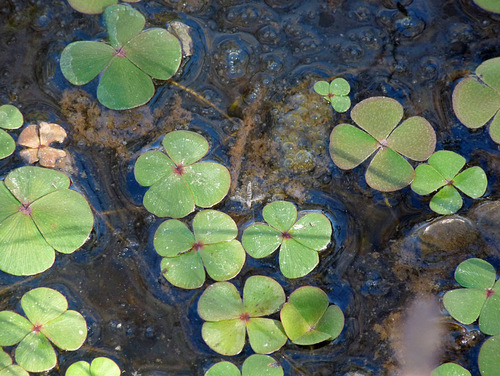

Marsileaceae
Water Clover / Pepperwort Family
Marsileaceae is a family of aquatic and semi-aquatic (amphibious) ferns in the order Salviniales. Unlike their free-floating relatives in Salviniaceae, these ferns are typically rooted in mud via creeping rhizomes. The family includes three distinct genera: Marsilea (water clovers), Pilularia (pillworts), and Regnellidium. They are heterosporous, producing spores within unique, hard, drought-resistant structures called sporocarps.
Overview
The Marsileaceae family comprises ferns adapted to life in or near water, often in habitats with fluctuating water levels like ephemeral pools, ditches, lake margins, and marshes. They grow from slender, creeping rhizomes that root in the substrate. This rooted habit distinguishes them immediately from the free-floating Salviniaceae.
Leaf morphology is diverse within the family. Marsilea species are famous for their long-stalked leaves bearing four leaflets that resemble a four-leaf clover. Pilularia species have simple, linear, grass-like leaves lacking a blade. The single species of Regnellidium has leaves with two broad leaflets. Like Salviniaceae, Marsileaceae are heterosporous, producing distinct male and female spores.
Reproduction involves specialized structures called sporocarps. These are hard, bean-like or spherical bodies borne on stalks attached to the rhizome or stipe base. Sporocarps are highly resistant to drought and can remain viable for decades, allowing the ferns to survive long dry periods. When rehydrated, the sporocarp wall splits, and a gelatinous structure (sorophore) emerges, bearing the sori which contain both megasporangia and microsporangia.
Quick Facts
- Scientific Name: Marsileaceae
- Common Name: Water clover family, Pepperwort family
- Number of Genera: 3 (Marsilea, Pilularia, Regnellidium)
- Number of Species: Approximately 60-70 (mostly Marsilea)
- Distribution: Worldwide in temperate and tropical regions, in aquatic or amphibious habitats.
- Key Features: Rooted aquatic/amphibious, heterosporous, sporocarps, diverse leaf forms (clover-like, grass-like, bilobed).
- Evolutionary Group: Polypodiopsida (Leptosporangiate Ferns) - Salviniales
Key Characteristics
Growth Form and Habit
Rooted aquatic or amphibious ferns. Slender, creeping rhizomes grow horizontally in mud or shallow water, bearing roots and leaves at nodes.
Leaves (Fronds)
Leaves arise from the rhizome nodes and show significant variation among genera:
- Marsilea: Leaves typically consist of a long petiole (stipe) topped by four cruciform leaflets (pinnae), resembling a four-leaf clover. Leaflet number can occasionally vary (2-8). Leaflets often exhibit nyctinasty (folding up at night or under stress). Submerged leaves may have smaller or less developed leaflets.
- Pilularia: Leaves are simple, linear, filiform (grass-like or awl-shaped), lacking an expanded blade.
- Regnellidium: Leaves consist of a petiole topped by two broad, kidney-shaped or fan-shaped leaflets. (Only R. diphyllum).
Heterospory and Sporocarps
Marsileaceae are heterosporous. Spores are produced within unique, hard, nut-like or bean-like sporocarps.
- Sporocarp Structure: Sporocarps are modified leaflets or segments of leaflets, borne on stalks (peduncles) attached to the rhizome near the petiole base or directly on the petiole. They contain multiple sori enclosed within the hardened sporocarp wall.
- Contents: Each sorus within the sporocarp contains both megasporangia (usually with one large megaspore each) and microsporangia (with numerous small microspores).
- Germination: Upon hydration after a dry period, the sporocarp wall splits, and a gelatinous, often worm-like or ring-like structure (sorophore) emerges, carrying the sori out into the water where spores are released.
- Drought Resistance: Sporocarps are extremely resistant to desiccation and heat, allowing survival through unfavorable conditions.
Vegetative Reproduction
Plants spread readily via the creeping rhizomes, which can fragment and establish new colonies.
Field Identification
Identifying Marsileaceae involves recognizing their aquatic/amphibious habitat, rooted nature, distinctive leaf shapes, and the presence of hard sporocarps.
Primary Identification Features
- Habitat: Aquatic or semi-aquatic, rooted in mud or shallow water.
- Leaf Shape:
- Four clover-like leaflets on a long stalk (Marsilea).
- Simple, grass-like leaves (Pilularia).
- Two broad leaflets on a stalk (Regnellidium - South America only).
- Sporocarps: Look for small (few mm), hard, dark, bean-shaped or spherical structures attached by stalks near the base of the leaves/rhizome.
- Rhizome: Presence of a slender, creeping rhizome in the substrate.
- Circinate Vernation: Young, developing leaves are coiled (fiddleheads).
Common Confusion Points
- True Clovers (Trifolium spp.): These are flowering plants (dicots) with 3 leaflets (rarely 4), different leaf texture, and produce flower heads, not sporocarps. They are typically terrestrial, though some grow in moist areas.
- Aquatic Buttercups (Ranunculus spp.): Some aquatic species have dissected leaves, but they produce flowers and lack sporocarps.
- Oxalis (Wood Sorrels): Some species resemble Marsilea but have 3 heart-shaped leaflets and produce flowers/capsules.
- Quillworts (Isoetes spp.): These are lycophytes with simple, quill-like leaves arising from a corm-like base; spores are borne in cavities at the leaf base, not in sporocarps.
Field Guide Quick Reference
Look For (Marsilea):
- Rooted aquatic/amphibious
- Leaves with 4 clover-like leaflets
- Long petioles
- Hard sporocarps near base
- Creeping rhizome
Look For (Pilularia):
- Rooted aquatic/amphibious
- Leaves simple, grass-like (no blade)
- Small, spherical sporocarps at base
- Creeping rhizome
- Often forms turf in drying mud
Notable Examples
The family includes three distinct genera adapted to aquatic and amphibious life.

Marsilea
Water Clover, Nardoo
The largest genus (50+ species), recognized by its four-leaflet leaves. Found worldwide. Some species like M. quadrifolia are used in ponds; others like M. drummondii (Nardoo) from Australia have sporocarps traditionally used as food by Aboriginal people (requires proper preparation to remove toxins).

Pilularia
Pillwort
A small genus (about 5-6 species) with simple, grass-like leaves. The small, spherical sporocarps ("pills") give it its name. Often inconspicuous, forming turf in drying mud at the edges of ponds or vernal pools. P. globulifera is found in Europe; P. americana in the Americas.

Regnellidium
(No common name)
A monotypic genus (containing only one species, Regnellidium diphyllum) native to southern Brazil and adjacent Argentina/Uruguay. Unique in having leaves with only two broad, fan-shaped leaflets. Used in biological research.
Phylogeny and Classification
Marsileaceae is the second family within the aquatic fern order Salviniales. Phylogenetic studies confirm its monophyly and its position as the sister group to the Salviniaceae (Salvinia + Azolla).
The order Salviniales represents a highly specialized lineage of leptosporangiate ferns adapted to aquatic environments, characterized by heterospory and the development of sporocarps. While sharing heterospory and an aquatic habit with Salviniaceae, Marsileaceae retains a rooted condition and exhibits different leaf morphologies and sporocarp structures, reflecting a distinct evolutionary path within the order.
Position in Plant Phylogeny
- Kingdom: Plantae
- Clade: Tracheophytes (Vascular plants)
- Class: Polypodiopsida (Leptosporangiate ferns)
- Order: Salviniales
- Family: Marsileaceae
Evolutionary Significance
Marsileaceae showcases several important evolutionary aspects:
- Adaptation to Amphibious Habitats: Demonstrates strategies for surviving fluctuating water levels, including drought-resistant sporocarps.
- Evolution of the Sporocarp: Represents a complex reproductive structure evolved for protection and dispersal in aquatic/ephemeral environments.
- Leaf Form Diversity: Striking variation in leaf morphology (clover-like, grass-like, bilobed) within a single small family.
- Convergent Evolution: The four-leaflet structure of Marsilea convergently evolved similarity to true clovers (Trifolium).